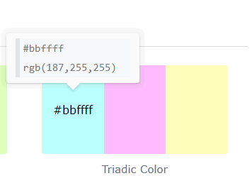
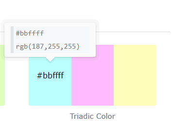

Style Guide Documentation Process
The Font I’m Thinking of Using

I feel like this font matches the aesthetic I want for my website. It has elegance without feeling too serious. I considered both readability and legibility, especially across devices. This aligns with design principles discussed in our Week 3 reading on visual communication and semiotics. According to Lupton (2014), typography plays a critical role in shaping user perception, and this font helps communicate a friendly yet professional tone.
The Colour Palette

 

These colours feel soft and clean. I want my palette to avoid loud, bright colours and instead offer a more sophisticated and calming vibe. They work well together, showing good contrast and color harmony. In line with Don Norman’s (2004) theory on emotional design, these colours evoke a sense of calm and approachability, enhancing user experience on an emotional level.
Composition & Layout
I started by sketching out several layout options focusing on hierarchy and balance. Key elements such as titles, body text, and images are positioned to create a natural flow down the page. Harmony is achieved by using consistent spacing, aligned blocks, and visual weight. This is influenced by the grid system discussed by Josef Müller-Brockmann, where structure creates clarity and efficiency in communication.
Interface Elements
My UI includes icon-based social links for a more modern look, a sticky navigation bar, and hover effects to indicate interactivity. I use color cues and shape repetition to create a visually intuitive interface. These decisions relate to Garrett’s Elements of User Experience (2011), particularly in terms of surface and skeleton planes, where visual design decisions impact usability.
Shape, Colour, Position
Shapes on my site are mostly rounded to reflect a friendly tone. Important buttons and highlights use the strong accent blue (#0047ab) for emphasis. Elements are spaced in a way that gives breathing room while still feeling connected. The use of these shapes and colour combinations ties into cognitive load theory (Sweller, 1988), as simpler visuals help users process information more efficiently.
Visual Hierarchy & Typography Rules
To create a clear and consistent visual hierarchy across my website, I’ve established a set of typographic rules that help guide users through the content intuitively. These rules influence how users interpret and prioritize information, ensuring that navigation and readability are seamless throughout the experience. This approach is informed by Gestalt principles of design—specifically proximity and similarity—which help users group and navigate content naturally.
Heading Structure & Sizing
- Main Headings (h1): Size: 2.5rem, Weight: 800 (bold). Used for page titles and section intros to draw immediate attention.
- Subheadings (h2): Size: 2rem, Weight: 700. Used as section dividers to help users scan pages efficiently.
- Tertiary Headings (h3): Size: 1.3rem – 1.5rem, Weight: 600. Used for subsections or nested content.
Body Text
- Size: 1rem, Weight: 400–500, Line Height: 1.6. Easy to read with generous spacing for improved legibility.
Button Text
- Size: 0.9rem – 1rem, Weight: 600, All caps with letter spacing of 0.05em. Designed to be actionable and stand out while maintaining elegance.
Consistent Spacing and Hierarchy
- Vertical spacing: 2rem between major sections, 1rem between headings and their content, 0.5rem between grouped elements.
- Size, weight, and spacing work together to reinforce importance and guide the eye smoothly through content.
References
- Garrett, J. J. (2011). The Elements of User Experience: User-Centered Design for the Web and Beyond. 2nd ed. Berkeley, CA: New Riders.
- Lupton, E. (2014). Thinking with Type: A Critical Guide for Designers, Writers, Editors, & Students. 2nd rev. ed. New York: Princeton Architectural Press.
- Müller-Brockmann, J. (1981). Grid Systems in Graphic Design: A Visual Communication Manual. Sulgen: Niggli Verlag.
- Norman, D. A. (2004). Emotional Design: Why We Love (or Hate) Everyday Things. New York: Basic Books.
- Sweller, J. (1988). Cognitive Load During Problem Solving: Effects on Learning. Cognitive Science, 12(2), pp.257–285.
- Wertheimer, M. (1938). Laws of Organization in Perceptual Forms. In: W. D. Ellis, ed., A Source Book of Gestalt Psychology. London: Routledge & Kegan Paul.